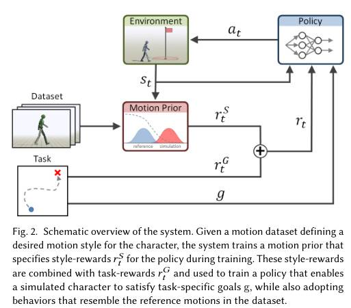

AMP: Adversarial Motion Priors for Stylized Physics-Based Character Control
对抗性动作先验用于风格化物理角色控制
论文详解文档
目录
- 基本信息
- 核心问题：这篇论文要解决什么问题？
- 基础知识铺垫
- AMP 方法的核心思想
- 4.1 整体框架
- 4.2 为什么这样设计
- [4.3 为什么 AMP 不需要 Phase](#43-为什么 amp-不需要 phase 相位)
- 4.4 对抗性动作先验
- 4.5 AMP vs 传统跟踪方法
- 4.6 AMP 如何自动组合技能
- 技术细节详解
- 实验结果
- 总结与启发
1. 基本信息
| 项目 | 内容 |
|---|---|
| 论文标题 | AMP: Adversarial Motion Priors for Stylized Physics-Based Character Control |
| 中文译名 | AMP：用于风格化物理角色控制的对抗性动作先验 |
| 发表会议 | ACM Transactions on Graphics (TOG) 2021 |
| 作者单位 | 加州大学伯克利分校、上海交通大学 |
| 主要作者 | Xue Bin Peng, Ze Ma (共同第一作者), Pieter Abbeel, Sergey Levine, Angjoo Kanazawa |
2. 核心问题：这篇论文要解决什么问题？
2.1 背景故事
想象一下你在玩一款 3D 游戏，游戏中的角色需要做出各种动作：走路、跑步、跳跃、翻滚、出拳等等。
问题 1：如何让游戏角色做出自然的动作？
传统方法有两种：
方法 A：纯物理模拟
- 原理：用物理引擎计算角色应该如何移动
- 优点：可以应对新环境
- 缺点：动作看起来很僵硬、不自然
比如：让一个角色从地上爬起来
- 纯物理方法：角色可能会以很奇怪的方式扭曲，看起来像机器人
方法 B：动作捕捉数据回放
- 原理：记录真实人类的动作，然后让角色跟着做
- 优点：动作非常自然
- 缺点：只能做录过的动作，遇到新情况就傻眼了
比如：录了走路动作，但前面有个障碍物
- 纯回放方法：角色会继续走路，然后撞到障碍物
2.2 现有方法的局限性
论文指出了现有基于跟踪的方法的两大问题：
问题 1：需要精心设计目标函数
传统方法需要人工设计"跟踪误差"的计算方式：
- 手臂位置差多少算错误？
- 腿部角度差多少算错误？
- 这些权重怎么设置？
这需要大量的人工调参，非常费时费力
问题 2：需要动作选择机制
当你有很多动作片段时（比如走路、跑步、跳跃）：
- 什么时候该走路？
- 什么时候该跑步？
- 什么时候该跳跃？
传统方法需要一个"动作规划器"来决定播放哪个动作
这个规划器本身就很复杂，需要大量人工设计
2.3 AMP 要解决的问题
核心目标：
让用户可以简单地指定"要做什么任务"，然后提供一堆动作片段作为"风格参考"，系统自动学会在正确的时间做正确的动作，而且动作风格与参考数据一致。
举个例子：
- 任务：走到目标位置并出拳
- 风格数据：一些走路的片段 + 一些出拳的片段（没有"走到目标再出拳"的完整片段）
- 期望结果：角色自动学会先走路接近目标，然后出拳，而且走路和出拳的风格与参考数据一致
3. 基础知识铺垫
为了理解 AMP，我们需要了解几个关键概念：
强化学习基础：如需了解强化学习的完整数学框架（MDP、贝尔曼方程、价值函数等），请参考 DeepLearningNotes - 强化学习基础
3.1 强化学习 (Reinforcement Learning, RL)
想象训练一只小狗：
状态 (State) 动作 (Action) 奖励 (Reward)
↓ ↓ ↓
你手里拿着球 → 小狗去捡球 → 给它零食
强化学习的核心循环：
1. 智能体 (Agent) 观察环境的 状态 (State)
2. 根据 策略 (Policy) 选择 动作 (Action)
3. 执行动作后获得 奖励 (Reward) 和新的状态
4. 目标：学习一个策略，使得累计奖励最大化
关键术语：
- 策略 (Policy) π：从状态到动作的映射规则，可以理解为"在什么情况下做什么"
- 奖励 (Reward) r：告诉智能体某个动作好不好
- 折扣因子 (Discount Factor) γ：未来的奖励打多少折，比如γ=0.99 表示明天的 1 分奖励相当于今天的 0.99 分
3.2 模仿学习 (Imitation Learning)
强化学习的问题：奖励函数很难设计
↓
模仿学习的思路：直接给智能体看"专家"是怎么做的，让它学着做
比如教机器人走路：
- 强化学习：设计奖励函数"走得快 +1 分，摔倒 -10 分"（很难设计！）
- 模仿学习：给机器人看人类走路的视频，让它模仿（更直观！）
3.3 生成对抗网络 (GAN)
GAN 的核心思想：有两个网络在"对抗"
生成器 (Generator) 判别器 (Discriminator)
↓ ↓
生成假图片 判断图片真假
↓ ↓
目标：骗过判别器 目标：准确判断真假
两者互相竞争，最后生成器能生成非常逼真的图片
3.4 生成对抗模仿学习 (GAIL)
把 GAN 的思想用到模仿学习上：
策略 (Policy) 判别器 (Discriminator)
↓ ↓
生成动作轨迹 判断轨迹是来自专家还是策略
↓ ↓
目标：骗过判别器 目标：准确判断真假
如果判别器分不清策略和专家的区别，说明策略学得足够好了！
GAIL 的核心公式：
判别器的目标：
minimize: -E[log(D(s,a))] - E[log(1-D(s,a))]
来自专家数据 来自策略数据
策略的目标：
maximize: -log(1-D(s,a)) (想办法让判别器给高分)
GAIL 的局限：
- 判别器输入是
(s, a)，任务和风格绑定 - 只能模仿完整的专家轨迹，无法组合技能
- 无法迁移到新任务
3.5 AMP vs GAIL
AMP 基于 GAIL 的思想，但做了两个关键改进：
改进 1：奖励分离（任务 + 风格）
| 方法 | 奖励公式 |
|---|---|
| GAIL | r(s,a) = -log(1 - D(s,a))只有对抗奖励 |
| AMP | r = wG × rG(任务) + wS × rS(风格) |
意义：
- GAIL：奖励只告诉策略"像不像专家"
- AMP：任务奖励告诉策略"做什么"(What)，风格奖励告诉策略"怎么做"(How)
改进 2：判别器只看状态转换（关键！）
| 方法 | 判别器输入 | 判别器判断什么 |
|---|---|---|
| GAIL | D(s, a) | 这个状态 - 动作对像不像专家 |
| AMP | D(Φ(s_t), Φ(s_{t+1})) | 这个状态转换像不像参考数据 |
为什么这是关键改进？
GAIL 的 D(s,a)：
├─ 绑定任务和风格
├─ 专家做什么，策略只能学什么
└─ 无法迁移到新任务
AMP 的 D(s_t, s_{t+1})：
├─ 只判断"动作风格"，不判断"做什么任务"
├─ 参考数据可以只有"走路片段"
└─ 策略可以迁移到"走到目标 + 出拳"任务
效果对比：
| 任务 | GAIL | AMP |
|---|---|---|
| 参考数据 | "走路 + 出拳"完整轨迹 | "走路片段" + "出拳片段"（分开） |
| 能否学会 | ❌ 不能（没有完整演示） | ✅ 能（自动组合） |
完整对比表格
| 特性 | GAIL (2016) | AMP (2021) |
|---|---|---|
| 判别器输入 | D(s, a) | D(Φ(s_t), Φ(s_{t+1})) |
| 奖励结构 | 只有对抗奖励 | 任务奖励 + 风格奖励（分离） |
| 参考数据 | 完整的专家轨迹 | 零散的动作片段（可以无序） |
| 技能组合 | ❌ 不能自动组合 | ✅ 自动组合涌现 |
| 任务灵活性 | ❌ 专家做什么学什么 | ✅ 可以迁移到新任务 |
| 相位同步 | 需要 | 不需要 |
3.6 物理模拟中的角色控制
在物理引擎中控制一个虚拟角色：
角色身体 = 多个刚体 (头、躯干、手臂、腿...) 通过关节连接
控制方式：
- 在每个关节处安装 PD 控制器
- PD 控制器需要目标角度
- 策略网络输出这些目标角度
物理引擎会计算：
- 如果给关节一个力，角色会怎么动
- 角色会不会摔倒
- 角色和地面/物体的碰撞
4. AMP 方法的核心思想
4.1 整体框架

Figure 2. AMP 系统概述。给定定义期望动作风格的运动数据集，系统训练一个动作先验来指定风格奖励 r^S。这些风格奖励与任务奖励 r^G 结合，训练策略使模拟角色满足任务特定目标 g，同时采用类似参考动作的行为。
AMP 的核心创新是把任务奖励和风格奖励分开：
总奖励 = 任务奖励 × 任务权重 + 风格奖励 × 风格权重
r(s,a,s',g) = wG × rG(s,a,s',g) + wS × rS(s,s')
其中：
- rG (任务奖励)：告诉角色"做什么"(What)
比如：往目标方向走、击中目标等
- rS (风格奖励)：告诉角色"怎么做"(How)
比如：用走路的姿势、用跑步的姿势等
4.2 为什么这样设计？
传统方法的问题：
- 任务和目标混在一起，很难设计
AMP 的思路：
- 任务奖励：可以很简单，只关心结果
比如"往目标方向走"，只需要计算速度方向的误差
- 风格奖励：用对抗学习自动学习
给一堆走路/跑步的动作片段，让判别器学会判断
"这个动作像不像参考数据里的风格"
4.3 为什么 AMP 不需要 Phase（相位）？
什么是 Phase？
Phase = 当前动作在时间线上的位置
比如一个 1 秒的走路循环：
- φ = 0.0：左脚刚落地
- φ = 0.25：左脚支撑中期
- φ = 0.5：右脚刚落地
- φ = 0.75：右脚支撑中期
- φ = 1.0：回到左脚落地
传统方法为什么需要 Phase？
DeepLoco/DeepMimic 的跟踪机制：
参考动作是一个时间序列：{q̂₀, q̂₁, q̂₂, ..., q̂_T}
策略需要知道："现在应该跟踪哪一个帧"
解决方法：
- 用一个相位变量 φ 跟踪进度
- 每一帧 φ 递增
- 根据 φ 找到对应的参考帧 q̂_φ
- 计算当前姿势 q 和 q̂_φ 的误差
问题：
1. 需要知道动作的周期长度
2. 对于非循环动作（如后空翻只有一次），phase 很难设计
3. Phase 是硬编码的，不能灵活调整
4. 如果角色摔倒，phase 继续递增，但实际姿势已不匹配
AMP 为什么不需要 Phase？
AMP 的判别器机制：
判别器输入：D(Φ(s_t), Φ(s_{t+1}))
判别器判断："这个状态转换像不像参考数据集里的？"
关键区别：
- 不关心"现在是第几帧"
- 只关心"这个动作片段自不自然"
- 参考数据是"无序的片段集合"，不是"有时间顺序的轨迹"
对比：
| 方法 | 参考数据 | 如何判断"对不对" |
|---|---|---|
| DeepMimic | 一个完整的走路循环 | 当前姿势 vs 第 φ 帧的姿势 |
| AMP | 一堆走路的片段（无序） | 这个动作转换像不像数据集里的任何片段 |
直观类比
| 方法 | 类比 | 说明 |
|---|---|---|
| DeepMimic | 跟唱卡拉 OK | 需要知道当前唱到哪一句（phase） |
| AMP | 即兴爵士 | 只要每个音符听起来像爵士风格就行 |
效果对比
| 方面 | DeepLoco/DeepMimic | AMP |
|---|---|---|
| Phase 需求 | ✅ 需要（硬编码） | ❌ 不需要 |
| 参考数据结构 | 有时间顺序的轨迹 | 无序片段集合 |
| 处理非循环动作 | ❌ 困难（phase 不好设计） | ✅ 可以 |
| 处理无序数据集 | ❌ 需要动作选择器 | ✅ 自动处理 |
4.4 对抗性动作先验 (Adversarial Motion Prior)
什么是"先验" (Prior)？
先验 = 事先的知识
动作先验 = 对"什么动作是自然的"的事先知识
这个知识从哪里来？从参考动作数据集来！
AMP 的判别器：
输入：角色在两个时刻的状态 (s_t, s_{t+1})
输出：这个状态转换是来自参考数据 (真实) 还是策略生成 (虚假)
判别器学到的东西 = 动作先验
- 知道什么样的动作转换是"自然的"
- 不需要人工设计误差函数
4.5 AMP vs 传统跟踪方法
| 特性 | DeepLoco/DeepMimic | AMP |
|---|---|---|
| 人工设计奖励 | ❌ 需要 | ✅ 不需要 |
| 动作选择器 | ❌ 需要 | ✅ 不需要 |
| 相位同步 | ❌ 需要 | ✅ 不需要 |
| 无序数据集 | ❌ 困难 | ✅ 可以 |
| 技能自动组合 | ❌ 需要设计 | ✅ 自动涌现 |
4.6 AMP 如何自动组合技能？
举个例子：障碍赛跑任务
参考数据集包含：
- 跑步片段
- 跳跃片段
- 翻滚片段
任务奖励：只鼓励向前移动
结果：
角色自动学会：
- 平时跑步
- 遇到沟壑时跳跃
- 遇到低矮障碍物时翻滚
为什么？
因为判别器认为这些动作都是"自然的"
而任务奖励鼓励向前
角色发现组合这些技能可以最大化总奖励
不需要人工告诉角色"什么时候该跳、什么时候该滚"！
5. 技术细节详解
5.1 MDP 定义 (S, A, P, R)
AMP 的任务可以形式化为一个马尔可夫决策过程 (MDP)，由以下组件定义：
| 组件 | 符号 | 定义 | 维度/说明 |
|---|---|---|---|
| 状态空间 | S | 角色身体配置（关节位置、旋转、速度等） | ~120D |
| 动作空间 | A | 关节目标旋转（通过 PD 控制器执行） | ~31D |
| 转移动力学 | P(s'|s,a) | 物理模拟器（不显式建模，通过采样学习） | - |
| 奖励函数 | r(s,a,s',g) | wG × rG(任务) + wS × rS(风格) | - |
| 控制信号 | g | 任务目标的编码（拼接到状态输入） | 因任务而异 |
状态 (State) 详细组成
s_t = [躯干状态，关节旋转，关节速度，末端执行器位置]
具体包括：
1. 躯干（root）状态
- 根高度
- 旋转（四元数）
- 线速度、角速度
2. 关节旋转
- 每个关节相对于躯干的旋转
- 使用 6D normal-tangent 编码（无歧义）
3. 关节速度
- 线速度
- 角速度
- 局部坐标系中表示
4. 末端执行器位置
- 手、脚的 3D 位置
所有特征都在角色的局部坐标系中记录（与任务无关）
动作 (Action) 详细定义
a_t = [每个关节的目标旋转]
具体表示：
- 球关节（髋、肩）：3D 指数映射 (Exponential Map)
q ∈ R³, 可转换为旋转轴 v 和旋转角度 θ
- 旋转关节（膝、肘）：1D 角度
q = θ
执行方式：
a_t → PD 控制器 → 关节力矩 → 物理模拟 → s_{t+1}
奖励函数 (Reward Function)
总奖励：r(s,a,s',g) = wG × rG(s,a,s',g) + wS × rS(s,s')
任务奖励 rG：
- 告诉角色"做什么"(What)
- 因任务而异（导航、击打、运球等）
- 示例（导航任务）：rG = exp(-0.25×(v* - d*·v_com)²)
风格奖励 rS：
- 告诉角色"怎么做"(How)
- 来自判别器：rS = -log(1 - D(s,s'))
- 与任务无关，可迁移
控制信号 (Control Signal)
控制信号 g ≠ 姿态空间的字段
↓
任务特定条件的编码
不同任务的控制信号：
| 任务类型 | 控制信号 g | 维度 |
|---------|-----------|------|
| 目标方向 | [目标方向 d*, 目标速度 v*] | 4D |
| 目标位置 | [目标位置坐标 x*, y*, z*] | 3D |
| 击打任务 | [目标位置 + 击打部位] | 6D+ |
| 运球任务 | [球的位置、速度等] | 15D+ |
使用方式：
策略输入 = [状态 s_t, 控制信号 g]
5.2 判别器的设计
判别器输入的特征
判别器不直接看完整状态，而是看提取的特征Φ(s)：
1. 躯干的线速度和角速度 (局部坐标系)
2. 每个关节的局部旋转
3. 每个关节的局部速度
4. 末端执行器 (手、脚) 的 3D 位置
为什么选这些特征？
- 足够紧凑：能在单个状态转换中捕捉动作特征
- 与任务无关：不包含任务特定信息，可以迁移到不同任务
判别器架构
判别器 D(Φ(s), Φ(s')) 是一个神经网络：
- 输入：当前状态特征 + 下一状态特征
- 输出：判断是真实数据还是策略生成的分数
网络结构：
- 全连接网络
- 两个隐藏层：1024 和 512 个 ReLU 神经元
- 输出层：线性层
5.3 关键技术改进
AMP 能成功，离不开以下几个关键技术：
改进 1：最小二乘 GAN (Least-Squares GAN)
问题：传统 GAN 用交叉熵损失，容易梯度消失
传统 GAN 的损失函数：
- log(D(s,a)) 和 log(1-D(s,a))
当判别器很强时：
- D(s,a) 接近 0 或 1
- log 的梯度接近 0
- 策略学不到东西
AMP 的方案：用最小二乘损失
判别器目标：
minimize: E[(D(s,s') - 1)²] + E[(D(s,s') + 1)²]
真实数据 虚假数据
- 真实数据的目标分数：1
- 虚假数据的目标分数：-1
策略奖励：
r(s,s') = max[0, 1 - 0.25×(D(s,s')-1)²]
好处：
- 梯度不会消失
- 训练更稳定
改进 2：梯度惩罚 (Gradient Penalty)
问题：GAN 训练不稳定
GAN 训练不稳定的原因：
判别器可能在真实数据流形上赋予非零梯度
导致生成器" overshoot "，偏离数据流形
AMP 的方案：添加梯度惩罚
判别器目标添加一项：
+ (w_gp/2) × E[||∇_Φ D(Φ)||²]
真实数据
含义：
- 惩罚判别器在真实数据上的梯度
- 让判别器更"平滑"
- 系数 w_gp = 10
效果：
- 训练稳定性大幅提升
- 学习速度更快
改进 3：速度特征
问题：只给位置信息不够
理论上，连续两帧的位置可以推算出速度
但实际上，这对某些动作 (如翻滚) 不够
没有速度特征时：
- 角色发现保持固定姿势也能骗过判别器
- 学不会翻滚
AMP 的方案：显式添加速度特征
在判别器输入中包含：
- 每个关节的局部速度
效果：
- 能学会更动态的动作
- 避免收敛到局部最优 (如保持固定姿势)
改进 4：经验回放缓冲区 (Replay Buffer)
问题：判别器容易过拟合到策略最新的轨迹
如果判别器只看策略最新的数据：
- 可能会"忘记"真实数据的分布
- 导致训练不稳定
AMP 的方案：用回放缓冲区
维护一个缓冲区 B，存储策略历史轨迹
判别器训练时：
- 从参考数据集 M 采样一批数据
- 从回放缓冲区 B 采样一批数据
效果：
- 防止判别器过拟合
- 训练更稳定
5.4 训练算法
AMP 使用了 DeepMimic 提出的训练技巧：
训练技巧 1：参考状态初始化 (Reference State Initialization, RSI)
RSI 从参考动作数据集中随机选择初始状态，让策略早期接触"有希望的状态"，加速学习高度动态动作（如后空翻、翻滚）。
训练技巧 2：提前终止 (Early Termination, ET)
当角色跌倒或身体部位（脚除外）接触地面时立即终止 episode，提高训练效率。
效果：
- 快速淘汰失败轨迹
- 让训练专注于成功的样本
- 大幅提升样本效率
#### 训练技巧 3：控制信号设计
不同的任务定义不同的控制信号表示方式：
例如：
- 目标方向任务：控制信号 = 目标方向 + 目标速度
- 目标位置任务：控制信号 = 目标位置坐标
- 击打任务：控制信号 = 目标位置 + 击打部位
控制信号拼接到当前状态，然后一起送入策略网络： 输入 = [状态 s_t, 控制信号 g]
算法 1: AMP 训练流程
输入：参考动作数据集 M
初始化：
- 判别器 D
- 策略 π
- 价值函数 V
- 回放缓冲区 B = ∅
循环直到收敛： 1. 收集数据： 用策略π收集 m 条轨迹{τ_i} 每条轨迹：τ_i = {(s_t, a_t, r^G_t), s_T, g} → 使用 RSI 和 ET (参考 DeepMimic 201)
2. 计算风格奖励：
对每个时间步 t：
- 查询判别器：d_t = D(Φ(s_t), Φ(s_{t+1}))
- 计算风格奖励：r^S_t (根据公式 7)
- 总奖励：r_t = w_G × r^G_t + w_S × r^S_t
→ 如果触发提前终止条件，episode 立即结束
3. 存储轨迹到回放缓冲区 B
4. 更新判别器 (n 次)：
- 从 M 采样 K 个真实转换
- 从 B 采样 K 个策略转换
- 用公式 8 更新 D
5. 更新策略和价值函数：
- 用 PPO 更新策略π
- 用 TD(λ) 更新价值函数 V
### 5.5 任务设计
论文测试了多种任务：
#### 1. 目标方向 (Target Heading)
任务：朝目标方向以目标速度移动
奖励函数： r^G_t = exp(-0.25 × (v* - d* · v_com)²)
其中：
- v*: 目标速度 (1-5 m/s 随机)
- d*: 目标方向
- v_com: 角色质心速度
#### 2. 目标位置 (Target Location)
任务：走到目标位置
奖励函数： r^G_t = 0.7×exp(-0.5×||x* - x_root||²) + 0.3×exp(-(max(0, v* - d*·v_com))²)
第一部分：鼓励靠近目标 第二部分：鼓励以一定速度走向目标
#### 3. 运球 (Dribble)
任务：把足球运到目标位置
状态增强：
- 球的位置、朝向、线速度、角速度
奖励函数： r^G_t = 0.1×r_cv + 0.1×r_cp + 0.3×r_bv + 0.5×r_bp
分别鼓励：
- 靠近球
- 保持在球附近
- 把球往目标方向运
- 把球运到目标
#### 4. 击打 (Strike)
任务：用指定身体部位 (如手) 击中目标
奖励分三阶段：
- 距离目标远：鼓励走向目标
- 距离目标近 (<1.375m)：鼓励出拳击中
- 击中后：常数奖励 1
这个任务需要组合走路和出拳两个技能！
#### 5. 障碍物 (Obstacles)
任务：穿越有障碍的地形
环境类型：
- 有沟壑、台阶、头顶障碍物
- 狭窄的垫脚石
状态增强：
- 前方地形的高度场 (100 个采样点，覆盖前方 10m)
需要组合跑步、跳跃、翻滚等技能！
---
## 6. 实验结果
### 6.1 多动作数据集实验
**实验设置**：
- 数据集：包含 56 个动作片段，8 个演员，共 434 秒动作数据
- 动作类型：走路、跑步、慢跑等
**结果**：
角色自动学会：
- 慢速时 (1m/s)：走路
- 中速时 (2.5m/s)：慢跑
- 快速时 (4.5m/s)：跑步
而且还会：
- 转弯时身体倾斜 (像真人一样)
- 大方向变化前先减速
这些都是自动涌现的行为，不需要人工设计！
### 6.2 技能组合实验
#### 实验 1：走路 + 起身
数据集：走路动作 + 从地上爬起的动作
结果：
- 角色摔倒后能自动爬起来继续走
- 甚至学会了数据集里没有的"前滚翻起身"技巧
#### 实验 2：走路 + 出拳
数据集：纯走路动作 + 纯出拳动作 (没有"走到目标再出拳"的完整动作)
任务：击打目标
结果：
- 角色自动学会先走路接近目标
- 然后在合适距离出拳
- 两个技能无缝衔接
#### 实验 3：障碍赛跑
数据集：跑步动作 + 翻滚动作
任务：穿越障碍物
结果：
- 遇到沟壑：跳过去
- 遇到头顶障碍：滚过去
- 自动在不同技能间切换
### 6.3 与潜空间模型对比
潜空间模型 (Latent Space Model) 是另一种学习动作先验的方法
对比结果：
- 任务性能：两者相当
- 动作质量：AMP 更好
- 潜空间模型可能产生不自然的动作
- AMP 直接在动作层面约束，更可靠
- 训练效率：潜空间模型预训练需要 3 亿样本
- AMP 不需要预训练，联合训练即可
### 6.4 单动作模仿实验
**测试动作**：
后空翻、侧空翻、前空翻、翻滚、跳跃、跑步、走路、舞蹈、爬行、旋转踢...
**结果对比** (平均姿势误差，单位：米，越小越好)：
| 动作 | 跟踪方法 | AMP |
|------|----------|-----|
| 后空翻 | 0.076 | 0.150 |
| 侧空翻 | 0.191 | 0.124 |
| 前空翻 | 0.278 | 0.425 |
| 跑步 | 0.028 | 0.075 |
| 走路 | 0.018 | 0.030 |
| 翻滚 | 0.072 | 0.088 |
**分析**：
- AMP 虽然没有跟踪方法那么精确，但质量相当接近
- 关键是 AMP 不需要人工设计奖励函数！
- 对于某些动作 (如侧空翻)，AMP 甚至比跟踪方法更好
### 6.5 消融实验
测试各个组件的重要性：
| 组件 | 重要性 |
|------|--------|
| 梯度惩罚 | ⭐⭐⭐ 最关键！没有它训练会不稳定 |
| 速度特征 | ⭐⭐ 对某些动作 (如翻滚) 很重要 |
| 回放缓冲区 | ⭐⭐ 防止判别器过拟合 |
---
## 7. 总结与启发
### 7.1 核心贡献
1. **任务与风格分离**
- 任务奖励：简单的目标函数
- 风格奖励：用对抗学习自动学习
2. **无需动作选择器**
- 技能组合自动从动作先验中涌现
- 不需要人工设计"什么时候做什么动作"
3. **无需相位同步**
- 传统方法需要知道"当前在动作的哪个阶段"
- AMP 不需要，可以处理无序动作数据集
4. **高质量动作**
- 能学会动态、复杂的动作
- 质量接近传统跟踪方法
### 7.2 当前挑战
1. **动作自然程度的量化评估**
- 为动作的自然程度制定量化评估标准是一个挑战
- 当前主要依靠定性观察和简单的姿势误差指标
2. **运动规划器设计**
- 轨迹跟踪类算法通常需要搭配一个运动规划计算法
- 高效的运动规划器也是一个挑战
- AMP 的优势在于不需要显式的运动规划器
### 7.3 本文目标回顾
> 生成一种控制策略，使角色能够在物理模拟环境中实现任务目标，同时其行为方式会模仿数据集中存在的动作模式，但不要求角色严格的模仿某个特定的动作。
**核心设计哲学**：
- **高层次任务目标**：通过相对简单的奖励函数来指定 (RL)
- **低层次行为特征**：通过一组非结构化的运动视频片段来定义 (GAN，运动先验)
### 7.4 AMP 的核心优势
1. **从大规模非结构化数据集中学习**
- 能够从大规模的非结构化数据集中学习各种行为模式
- 无需借助动作规划器或其他机制来选择具体的动画片段
- 可以处理无序的动作片段数据集
2. **自动技能组合**
- 不同技能之间的组合会自动通过运动模型得以实现
- 不需要人工设计技能转换逻辑
- 例如：走路 + 出拳 → 自动学会先走近再出拳
3. **无需人工设计奖励机制**
- 完全不需要人工设计奖励机制
- 不需要控制器与参考动作之间的同步处理
- 不需要相位 (phase) 跟踪
4. **任务与风格解耦**
- 任务奖励只关心"做什么"(What)
- 风格奖励决定"怎么做"(How)
- 同一风格先验可以迁移到不同任务
### 7.5 局限性
1. **模式崩溃 (Mode Collapse)**
**表现**：给定大数据集时，可能只模仿一小部分动作，忽略其他可能更优的动作。
**为什么会出现模式崩溃？**
| 原因 | 说明 |
|------|------|
| **策略"偷懒"** | 找到一种能骗过判别器的动作，就不再探索其他模式 |
| **奖励单一** | 只有对抗奖励 r = -log(1-D)，没有多样性鼓励 |
| **判别器太弱** | 只能区分"像不像"，不能区分"多不多" |
**直观类比**：
场景：美食比赛
数据集 = {川菜，粤菜，鲁菜，淮扬菜...} 判别器 = 评委，判断"像不像中餐" 策略 = 厨师
模式崩溃： 厨师发现"做川菜就能拿高分" ↓ 于是只做川菜，不做其他菜系 ↓ 评委认为"川菜 = 中餐"，给高分 ↓ 厨师继续只做川菜...
**AMP 中的具体表现**：
数据集：{走路，跑步，跳跃，翻滚}
训练后：
- 策略只学会走路（因为走路就能骗过判别器）
- 即使给任务奖励，也只会走路
**解决方案**：见 ASE (199) —— 通过互信息最大化强制学习多样化技能。
2. **先验需要重新训练**
**什么是"动作先验"？**
动作先验 = 判别器 D(s, s') 学到的"什么动作是自然的"知识
在 AMP 中：
- 判别器看参考动作数据 → 学会判断"这个动作自不自然"
- 这个判断能力就是"动作先验"
- 策略用这个先验作为风格奖励 r^S = -log(1-D)
**问题：每个任务都要重新训练判别器**
任务 1：走到目标 ├─ 训练判别器 D₁ (学习走路风格) └─ 训练策略 π₁
任务 2：运球 ├─ 重新训练判别器 D₂ (学习运球风格) └─ 重新训练策略 π₂
任务 3：击打目标 ├─ 重新训练判别器 D₃ └─ 重新训练策略 π₃
**为什么这是局限性？**
| 方法 | 任务 1 | 任务 2 | 任务 3 | 总时间 |
|------|--------|--------|--------|--------|
| **AMP** | T_pre + T_task | T_pre + T_task | T_pre + T_task | 3×(T_pre + T_task) |
| **理想** | T_pre + T_task | T_task | T_task | T_pre + 3×T_task |
- **T_pre**: 预训练动作先验的时间
- **T_task**: 任务训练时间
当有多个下游任务时，重复训练先验非常浪费时间。
**解决方案**：见 ASE (199) —— 预训练 + 迁移范式，判别器和低级策略固定，只训高级策略。
3. **时间组合 vs 空间组合**
- 擅长时间上的技能组合 (先 A 后 B)
- 空间组合 (同时做 A 和 B) 还需要研究
4. **风格先验的局限性**
- 对抗学习只能区分生成动作的风格是否像训练数据
- 但不能区分生成动作的好坏
- 如果训练数据质量差，它会把这种"差"当成它的风格来学习
5. **训练难度**
- GAN 和 RL 都很难训，它们的组合更难训
- 需要精心调参和技巧 (如梯度惩罚、经验回放等)
### 7.3 启发与应用
1. **游戏角色控制**
- 可以用少量动作数据训练出灵活的角色
- 角色能自动应对各种情况
2. **机器人控制**
- 可以用人类演示数据训练机器人
- 让机器人学会自然的动作
3. **动画制作**
- 动画师可以提供风格参考
- 系统自动生成符合风格的动画
### 7.4 关键公式汇总
**总奖励函数**：
r(s,a,s',g) = w_G × r^G(s,a,s',g) + w_S × r^S(s,s')
**风格奖励**：
r^S(s,s') = max[0, 1 - 0.25×(D(s,s')-1)²]
**判别器目标**：
minimize: E[(D-1)²] + E[(D+1)²] + (w_gp/2)×E[||∇D||²] 真实 虚假 梯度惩罚
---
## 附录：重要概念解释
### A. 什么是 PD 控制器？
PD = Proportional-Derivative (比例 - 微分)
物理引擎中的关节控制方式：
-
给关节一个目标角度 q_target
-
PD 控制器计算需要施加的力：
torque = Kp × (q_target - q_current) + Kd × (dq_target - dq_current)
Kp: 比例增益 Kd: 微分增益
作用：让关节角度追踪目标值
### B. 什么是指数映射 (Exponential Map)？
一种旋转表示方法：
- 用 3D 向量 q 表示旋转
- 向量方向 = 旋转轴
- 向量长度 = 旋转角度
优点：
- 没有万向节锁问题
- 比四元数更紧凑 (3D vs 4D)
- 平滑且唯一
### C. 什么是动态时间规整 (DTW)？
用于比较两个时间序列的相似度
问题：
- 模拟角色的动作可能比参考动作快或慢
- 直接比较会导致误差很大
DTW 的解决：
- 自动对齐两个序列
- 找到最优的时间对应关系
- 再计算对齐后的误差
用于评估 AMP 的模仿质量
---
## 参考资源
- **原论文**: https://doi.org/10.1145/3450626.3459670
- **项目页面**: https://xbpeng.github.io/projects/AMP/index.html
- **代码**: 论文发表时开源
---
*本解读文档由 AI 助手生成，旨在帮助初学者理解 AMP 论文的核心思想。如有不理解的地方，建议阅读原论文或访问项目页面获取更多信息。*